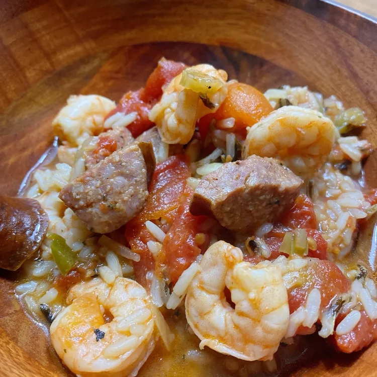

This is and adaptation of a recipe my sister in law gave me. It is hearty and delicious. You can make it as spicy or as mild as you like to your taste and it doesn't take long to make. Set out hot sauce for diners to season to their own liking.

Prep Time: 25 mins | Cook Time: 45 mins | Total Time: 1 hrs 10 mins | Servings: 6
Ingredients
1 ½ tablespoons olive oil
1 medium onion, chopped
1 green bell pepper, seeded and chopped
1 jalapeno pepper, seeded and chopped, or more to taste (Optional)
1 (6 ounce) package uncooked long grain and wild rice mix, with seasoning packet
1 (12 ounce) package fully cooked hot Italian sausage, cut into 1/4-inch thick slices
1 pound raw small shrimp, shelled and deveined
Directions
Step 1 Heat oil in a large stockpot over medium-high heat. Add onion, bell pepper, and jalapeno and saute until tender, about 5 minutes. Stir in garlic and cook until fragrant, about 1 minute.
Step 2 Drain liquid from tomatoes into the stockpot. Place tomatoes on a cutting board, dice, and add to the pot. Add chicken broth, rice mix, and seasoning packet, cover, and bring to a boil. Reduce heat and simmer until rice is tender, about 25 minutes.
Step 3 Add sliced sausage and simmer for 5 minutes. Stir in shrimp, and cook until they are bright pink on the outside and the meat is opaque, about 3 minutes more.